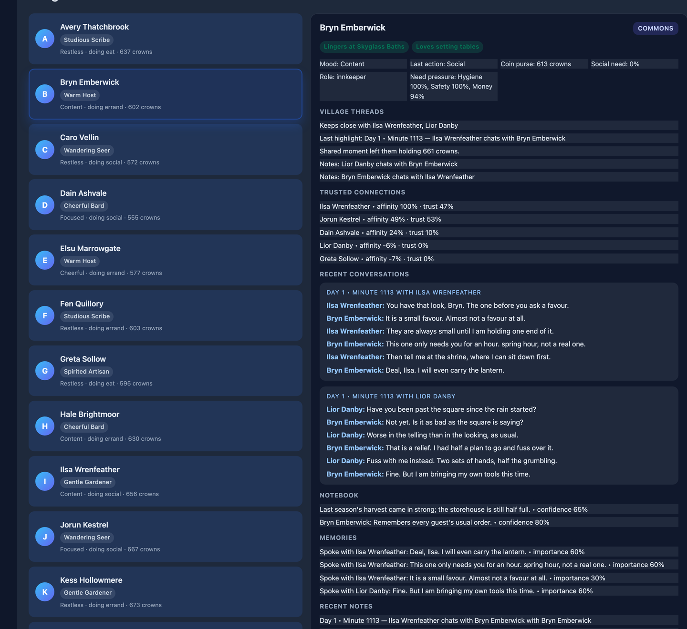
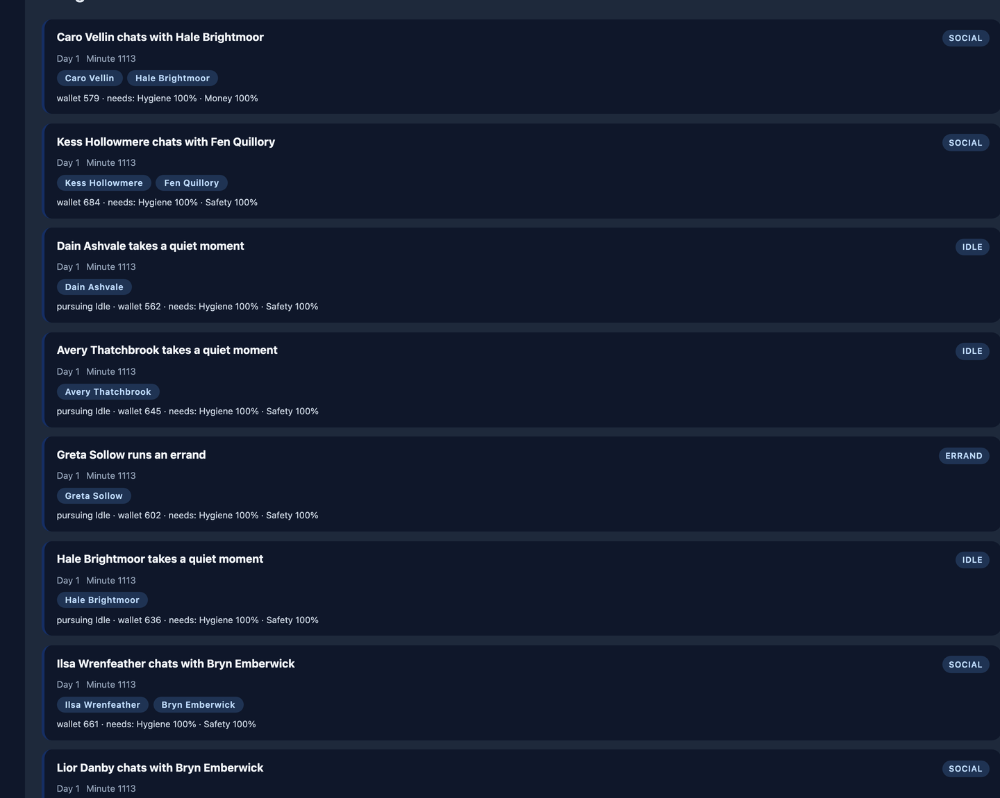
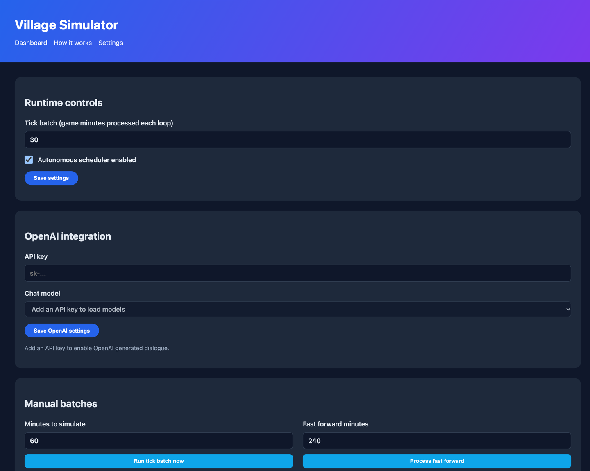

A simulation toolkit sold as source, not a game. Twelve villagers with needs, jobs, daily schedules and opinions about each other.
Captures of the running simulation. This is a toolkit, not a game — there is no win condition and nothing to click but the controls. If you want something to play, this will disappoint you, and it is better said here than after you have paid.
What it looks like

A villager. Eight needs decaying on their own clock, a job, a daily schedule, and a relationship graph that moves as they interact.

The chronicle. A typed event log, so every villager-minute is readable after the fact rather than vanishing into an animation.

The controls. Tick rate, world clock and generation settings. This is the whole interactive surface, which is the point of calling it a toolkit.
How it was checked
Runs with no API key. The fallback dialogue is real, written content — not a stub that prints placeholders.
The broken Socket.IO integrity hash that silently disabled the advertised live feed is fixed and confirmed working in a real browser.
Two needs that no action could ever satisfy — hygiene and safety, previously pegged at ~99% and ~98% of all simulated time — are fixed and now move.
Not included
The planner is a utility planner, not GOAP. No world-state search, no preconditions, no action chaining. The source says so rather than overselling it.
There is no gameplay. The UI changes settings and advances the clock.
Running it with an API key costs money — roughly $0.27 per hour at the default tick rate, about $192 over 30 days if left running. There is no spend cap. The listing states this in full.
Get it
Village Sim — Flask + Socket.IO — $5
Complete Flask + Socket.IO source with a 23-table schema. Works with no API key.